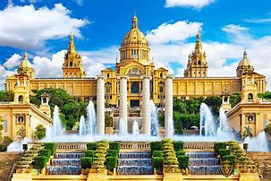

Paris, France
Paris, the capital of France, serves multiple purposes that contribute to its significance on both a national and global scale:
1. **Cultural Hub**: Paris is renowned for its rich history in art, literature, fashion, and philosophy. It hosts iconic museums like the Louvre and cultural landmarks such as the Eiffel Tower and Notre-Dame Cathedral.
2. **Economic Center**: As one of the largest cities in Europe, Paris is a major financial center, hosting numerous multinational corporations and financial institutions. It plays a crucial role in the European and global economy.
3. **Political Importance**: Paris is the political heart of France, home to the government institutions, including the Élysée Palace and the National Assembly.
4. **Educational Influence**: The city is a center for education and research, housing prestigious universities and institutions like Sorbonne University and Sciences Po.
5. **Tourism**: Paris is one of the most visited cities in the world, attracting millions of tourists each year who come to experience its unique charm and attractions.
6. **Fashion and Innovation**: Known as the fashion capital, Paris hosts major fashion events and is home to many top designers and luxury brands.
Overall, Paris's blend of history, culture, and modernity makes it a key player in various spheres globally..
